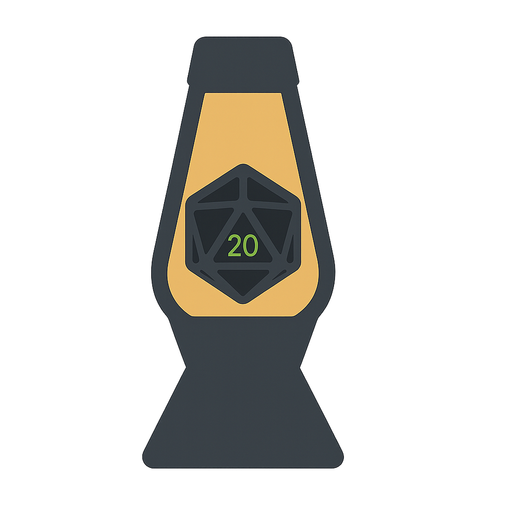

PROJECT

ZZX-LABS R&D // SOFTWARE // WEB MIRROR
SynthLavaRNG
SynthLavaRNG is a Lavarand-inspired offline entropy harvester using real-time visual chaos sources, SHA3-256 hashing, and HMAC-DRBG mixing with optional BitRNG blending for secure random number generation.
INSTALL-FREE CAPABILITY LAYER
Browser Demo
WEB PARITY
Native / Browser Matrix
| Capability | Web | Notes |
|---|
TAGS
Project Taxonomy
NATIVE STACK
Dependencies & Frameworks
Dependencies
Frameworks
LOCAL-FIRST
Browser Security Boundary
This page executes project-compatible functionality locally wherever browser APIs permit. It does not claim parity for privileged filesystem access, raw sockets, kernel interfaces, unrestricted process execution, hardware that lacks an applicable Web API, or server-side services. Network actions are explicit and user initiated. Sensitive local files are not uploaded by the shared runtime.